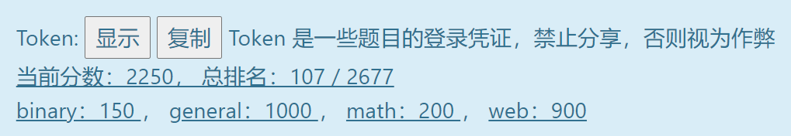
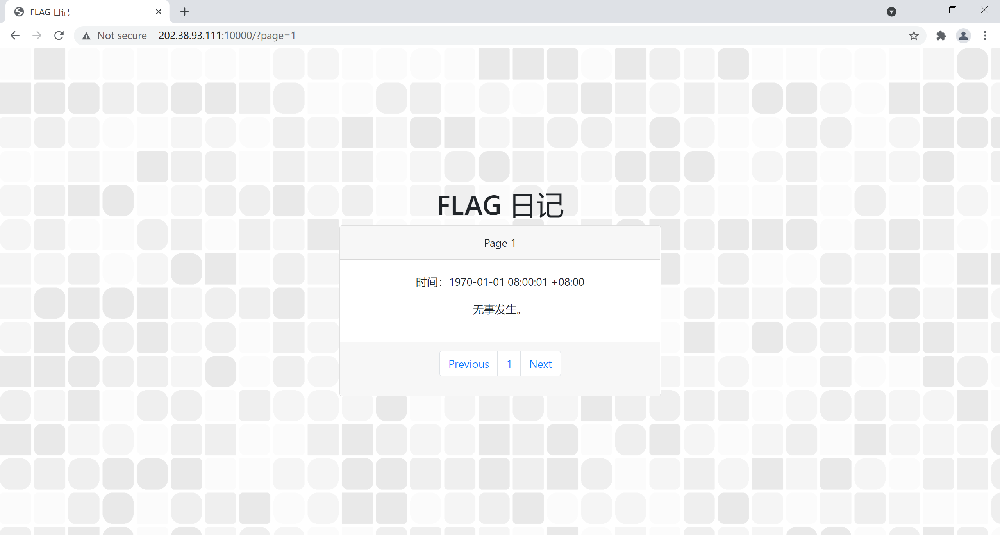
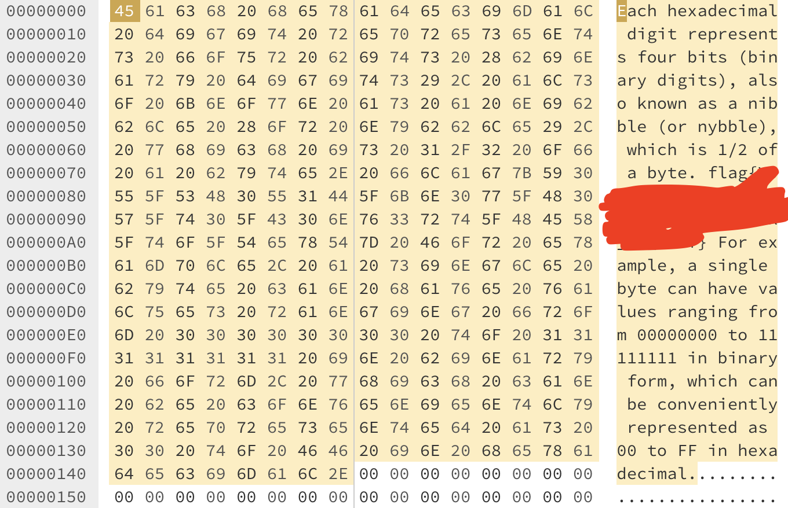
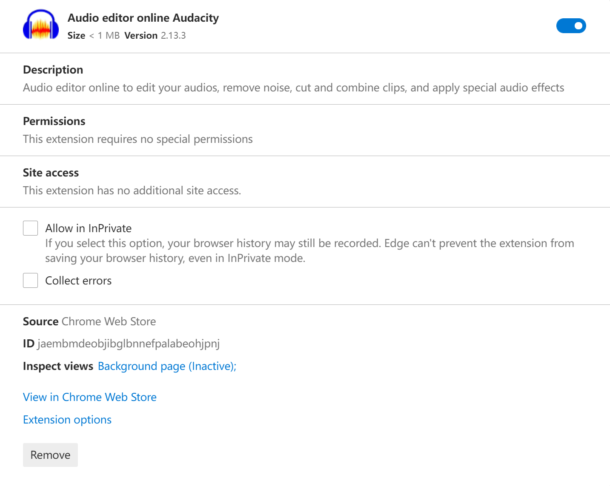
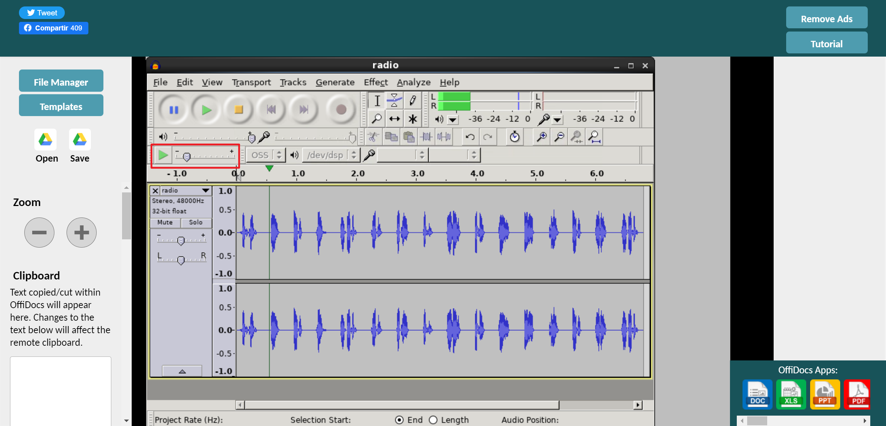
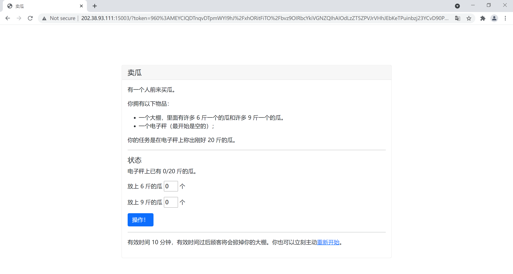
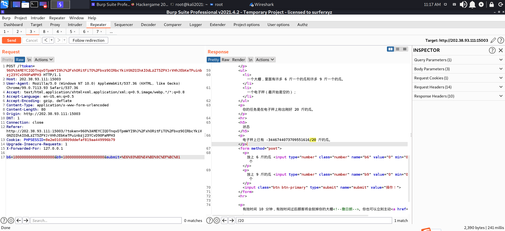
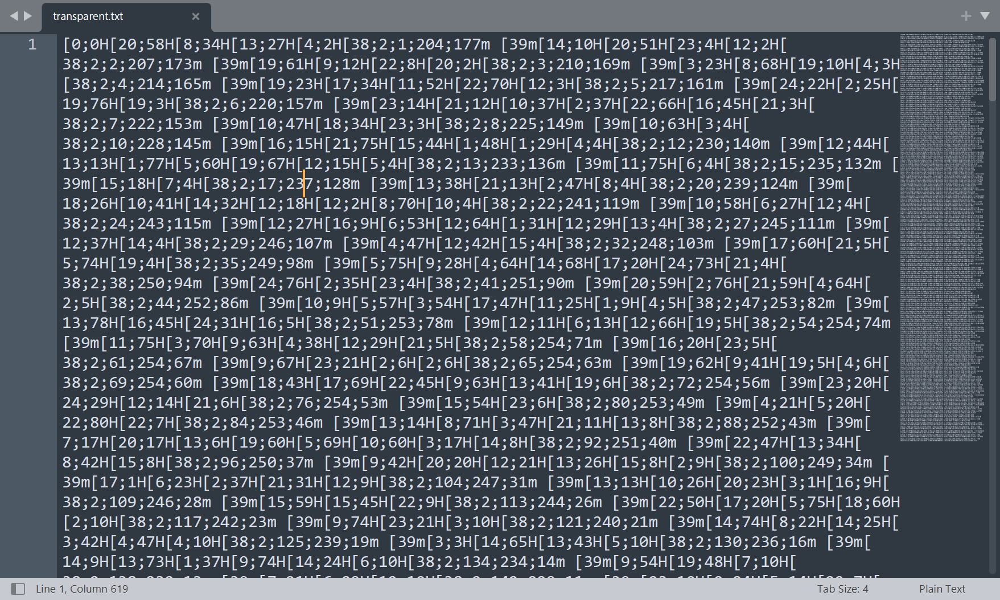
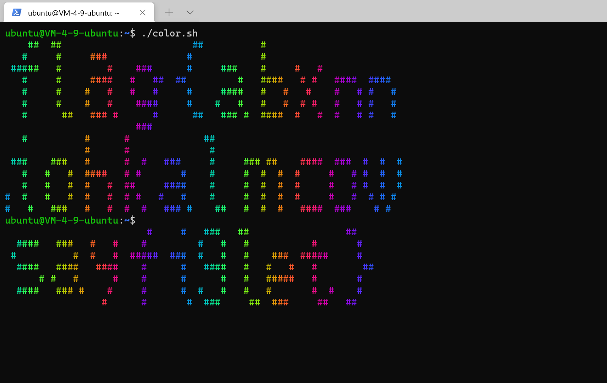
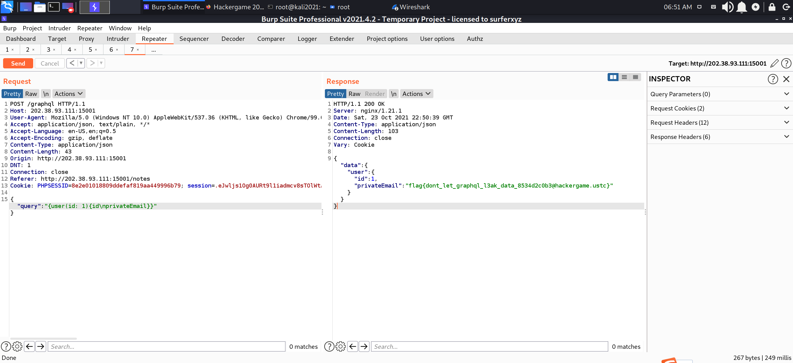

Hackgame2021
此为Thomason的个人WP，官方WP：USTC-Hackergame/hackergame2021-writeups: 中国科学技术大学第八届信息安全大赛的官方与非官方题解 (github.com)。个人战绩如下：

[TOC]
签到
打开题目，是一个flag的日记，有显示时间，传入参数为?page=。通过简单调整参数发现表示的是秒数，从1970.1.1 8:00向后加。题目要求调到比赛时间，通过简单数学计算即可实现。
后来了解到这是Linux的时间戳，可以使用一些在线工具进行解答

进制十六——参上
题目给出一个带有十六进制数据的flag文件，明文flag被处理遮挡住了，但是16进制的数据并未被遮挡。定位 f 对应的 ASCII-Hex 编码为66，向后一一解码 Hex 即可。

去吧！追寻自由的电波
题目给出一个变调加速后的MP3文件，能够模糊听出“alpha beta”之类的单词，同时题目提示“考虑到信息的鲁棒性，X 同学使用了无线电中惯用的方法来区分字符串中读音相近的字母。”猜测使用 NATO phonetic alphabet - Wikipedia 读法朗读flag内容的字母。
这里笔者没有安装处理音频的软件，采用在线的一个浏览器插件解决。载入文件后直接调节速度即可，此插件自动变调减速音频。如果使用播放器进行低速播放还是会听到非常明显的小黄人音效，而且根本听不清，是因为播放器是不会对原本音频变调处理的，只做速度上的减速。
NATO phonetic alphabet 在众多战争类游戏中也有出现，比如战地五在夺取基地C时旁白播报：Take the objective Charlie.


猫咪问答 Pro Max
猫咪问答，典型折磨题。题目答案都可以从互联网上找到，但是需要一些搜索技巧才能快速准确地找到答案。
- 题目要求找到已经被并入中科大 Linux 用户协会（USTCLUG）的中科大信息安全俱乐部（SEC@USTC）的社团章程。题目给出了信息安全俱乐部以前的域名，想必是和这个有关。一开始尝试谷歌搜索几个关键字：“中科大信息安全俱乐部”，“章程”，“会员代表大会”，但都没有结果。域名无法打开，尝试寻找历史IP，也是无功而返。最后在好友的提醒下想到使用搜索引擎快照进行解决。Wayback Machine (archive.org) 通过网址输入域名查询历史快照，在快照首页找到章程。
- 在 中国科学技术大学 Linux 用户协会 - LUG @ USTC 首页即可找到评为五星社团的次数。“并于 2015 年 5 月、2017 年 7 月、2018 年 9 月、2019 年 8 月、2020 年 9 月及 2021 年 9 月被评为中国科学技术大学五星级学生社团。” 题目条件限制为近五年，因此舍去2015年那次
- 找活动室门口牌子的字。既然题目明确表明不需要进入校园即可得到答案，依然搜索关键字：“中科大”，“西区”，“图书馆”。找到图片来源于 西区图书馆新活动室启用 - USTC LUG 的历史活动照片，高清无码。
- 论文数据集查找。谷歌搜索论文，找到公开的源文件后稍微读一下论文内容即可知道答案。（或者直接根据图片数量猜测）
- RFC举报机制。搜索相关关键字即可找到 官方文档 中第六节有明确指出应该发向哪里。
卖瓜
通过6斤的瓜和9斤的瓜称出20斤，小学生都知道是称不出来的。这题有点脑筋急转弯的感觉。一开始尝试浮点数绕过，科学计数法等等操作，结果都以失败告终。但是在尝试科学计数法的时候不小心数字整大了没清零，瓜的显示直接变成浮点数了。猜测可能有溢出，溢出成负数再慢慢加回来。经过尝试，如图，正好在这个条件下的负数可以直接使用6斤的瓜称够20斤。


透明的文件
题目提示说文件是用来在终端生成五颜六色的flag。但是打开文件是一堆很奇怪的字符，有点像乱码。文件中找来找去找不到任何有关flag的线索，猜测是展示出flag并非直接在文中显示。搜索发现了一个CSDN的相关介绍，但是并没有说明为什么这样就能显示彩色字体，按照文中的格式，把每个 [ 前面都加上 \033 并且分行， [XXm 为表示的颜色字符的结尾标识部分，使用简单的shell脚本打印所有行即可。
1 | !/bin/bash |
后来查到终端显示彩色字符源于一个叫 ANSI escape code 的东西，终端把那些“奇怪”的字符序列解释为相应的指令，而不是普通字符编码。


旅行照片
这是个非常有趣的题目，题目提示没有隐写等各种奇技淫巧，就是直接答题。观察图片，题目提示左上角是一个KFC（不说我都没看到）。直接搜索蓝色KFC相关资料，查到是一个在秦皇岛的一处景点，新奥海地世界。谷歌地图查看位置，发现在图上方有一个类似港口的地方，结合地图确定拍摄者大概位置为13~15层，以及拍摄时间约为下午的3~4点，朝向东南。然后可以通过KFC官方渠道找到门店电话（或者美团什么的），至于KFC旁边的三个字可以通过这个店在地图上标注的具体位置猜测，地图的位置是…秦皇岛市…海豚馆旁。猜测是海豚馆。但是本人是找到了在停车场拍照的正门照片（忘记保存），旁边确实是海豚馆。
FLAG 助力大红包
拼多多砍一刀拿flag （bushi。题目要求通过不同IP访问平台砍一刀，但是每个/8地址只允许有一个IP参与砍。直接Python写脚本使用 X-Forward-For 伪造IP访问，当所有/8地址访问完之后就可以拿到flag。
1 | import requests |
Amnesia
轻度失忆
题目使编译后 ELF 文件的 .data 和 .rodata 段会被清零。ELF文件中代码部分会放到 .text 段中，只读数据，或者不变的字符会放到 .rodata 段中（注意，print 中直接写入的字符串也会放到 .rodata 段中），初始化的全局变量会放到 .data 段中。因此使用 print 函数是行不通的，换一种方法，比如 putchar(); 答案就出来了。
1 | int main() |
图之上的信息
搜索GraphQL相关资料以及其基础的使用和语法。参考 Threezh1’Blog 和 P神的PPT 即可完成题目。GraphQL实际上的查询模式与其他数据库都是大同小异，都有显而易见的基本特征。利用内省查看所有可用字段：
1 | {__schema{queryType{name}mutationType{name}subscriptionType{name}types{...FullType}directives{name description locations args{...InputValue}}}}fragment FullType on __Type{kind name description fields(includeDeprecated:true){name description args{...InputValue}type{...TypeRef}isDeprecated deprecationReason}inputFields{...InputValue}interfaces{...TypeRef}enumValues(includeDeprecated:true){name description isDeprecated deprecationReason}possibleTypes{...TypeRef}}fragment InputValue on __InputValue{name description type{...TypeRef}defaultValue}fragment TypeRef on __Type{kind name ofType{kind name ofType{kind name ofType{kind name ofType{kind name ofType{kind name ofType{kind name ofType{kind name}}}}}}}} |
然后通过返回的数据直接利用payload完成攻击：
1 | {"query":"{ user(id:1) { privateEmail }}"} |

Easy RSA
参考：RSA加密算法 模逆元 欧拉函数 Python实现密码学中的模逆运算 Compute n! under modulo p - GeeksforGeeks
求 $p$
利用Wilson’s theorem - Wikipedia 即可快速求出大数的的余数，尤其是当有阶乘存在的时候，参考代码： Compute n! under modulo p - GeeksforGeeks。注意别忘记最后是求出数字的下一个质数。
求 $q$
$q$ 是顶级套娃，$q$ 也被加了一层RSA，但是对q加密的RSA使用了一个由多个质数相乘得到的 $N$ 。通过代码注释中给出的 value[-1] 便可以很容易得到整个列表数据。再通过欧拉函数作用于 $N$ 得到 $r$ ，再求 $e$ 关于 $r$ 的模逆元即可得到 $d$ 。此时就有公钥 $(N,e)$ 和私钥 $(N,d)$ 。即可进行解密操作。注意别忘记最后是求出数字的下一个质数。
1 | import math |
加密的 U 盘
题目给出两个U盘文件，一个是第一天的，已知密码挂载即可打开。一个是第二天的，说是设置了“随机生成的强密码”。这里打引号是因为我们根本不需要破解所谓的强密码。根据 Linux Unified Key Setup - Wikipedia 给出的外链参考 FrequentlyAskedQuestions · Wiki · cryptsetup / cryptsetup · GitLab 写到：
CLONING/IMAGING: If you clone or image a LUKS container, you make a copy of the LUKS header and the master key will stay the same! That means that if you distribute an image to several machines, the same master key will be used on all of them, regardless of whether you change the passphrases. Do NOT do this! If you do, a root-user on any of the machines with a mapped (decrypted) container or a passphrase on that machine can decrypt all other copies, breaking security. See also Item 6.15.
通过 How to decrypt LUKS with the known master key? - Unix & Linux Stack Exchange 的利用方法，导出第一天硬盘镜像的 master-key 文件，再用这个 master-key 去打开第二天的硬盘即可。
赛博厨房
Level 0
Level 0 甚至可以用来做签到题目，只需要基础的编程思想就可以按照指令一步步做出来，毕竟才两个材料。（没有特别多人做出来很可能是因为看到总分600分怕了，以为是一道题）
Level 1
有过指令集等相关知识的一看题目便知道这是使用循环，当不满足条件时向上跳转，直到满足条件。
1 | 向右 1 步 |
minecRaft
这题其实是披着web的皮，戴着crytpo手套的reverse狼。为什么这么说呢，打开web游戏的源代码，可以看到 JS 中打开所有三盏灯的关键部分是一个叫 gyflagh() 的函数。这个函数在 flag.js 里面，同样使用谷歌浏览器开发工具即可找到并以漂亮的代码格式整理好展示。
1 | if(cinput.length>=32){ |
但是，flag.js 的代码是过了混淆的，根据格式来看很可能是 javascript-obfuscator 混淆后生成的代码，多创建了一个字典函数，所有函数执行都是先通过字典函数还原之后再执行。通过 JS NICE: Statistical renaming, Type inference and Deobfuscation 能够一定程度上缓解混淆。
1 | function _0x381b() { |
细读代码之后可以发现，关键的加密代码是这个，并且通过谷歌浏览器调试也可以发现这个函数名是 encrypt。使用方式为 String<type>.encrypt(seed) 。而encrypted函数中关键的函数就是 code() 这个才是主要的加密功能的函数。反混淆之后的 code() 函数如下：
1 | function code(p, q) { |
可以看到这个过程很像一个对称式加密，其中密钥的部分是恒定的，可以通过调试手段从混淆函数中找到，因此非常容易反解出来，以此为依据撰写他的解密函数 decode() ，函数如下：
1 | function decode(p, q) { |
同样的，逆向分解加密后的一长串字符串，并逐一解密即可，完整EXP代码如下，此代码可以直接放到浏览器调试窗口运行即可。
1 | cipher = '6fbde674819a59bfa12092565b4ca2a7a11dc670c678681daf4afb6704b82f0c'; |